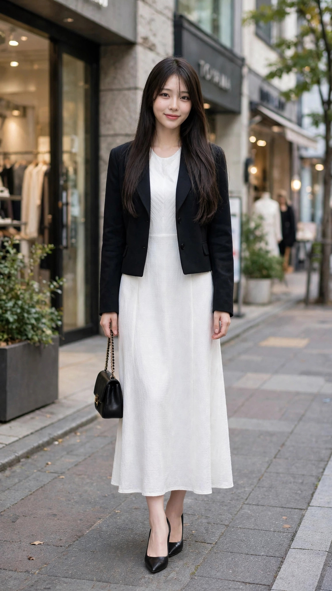

青山のモデルDは白のロングワンピースに黒の短丈ジャケット、自由が丘のモデルB2は白のシャツワンピースに黒のベルトと黒のロングブーツ。白ワンピースという主役は同じでも、締め色の入れ方が対照的です。
短丈ジャケット型はウエストの位置で区切るので、ワンピースの柔らかさの中に輪郭が生まれます。ベルト＋ブーツ型は縦の3点（首元・腰・足元）に黒が入り、白一色でも間延びしません。白の面積が大きいコーデほど、締め色の置き場所で完成度が決まります。
モデルD、モデルB2ともに骨格は未定（記録なし）／ブルベ冬。純白はブルベ冬の得意な白で、顔映りが明るくなります。クリーム色はブルベ冬の白にはならないので、白ワンピを選ぶ時は色味の確認が要ります。